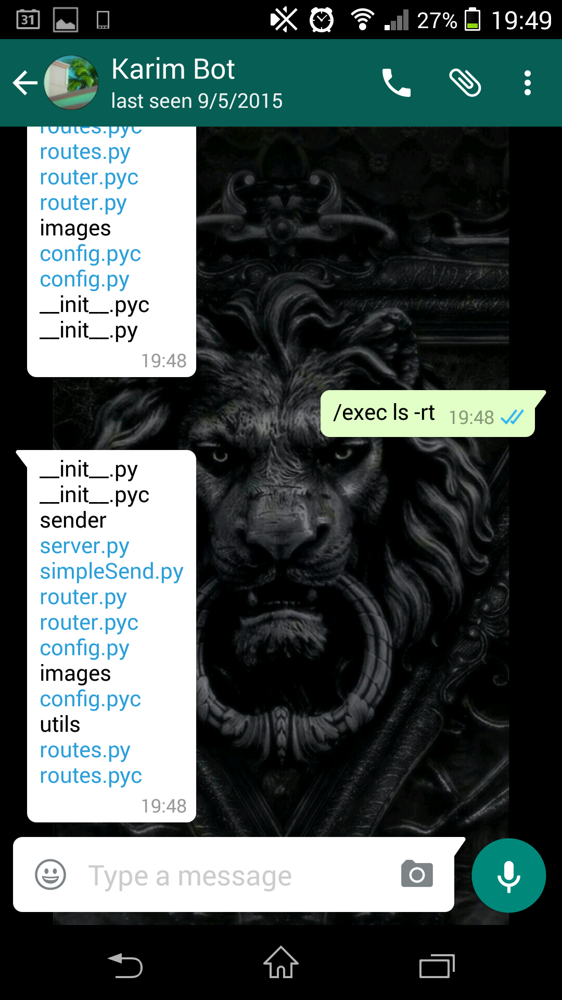
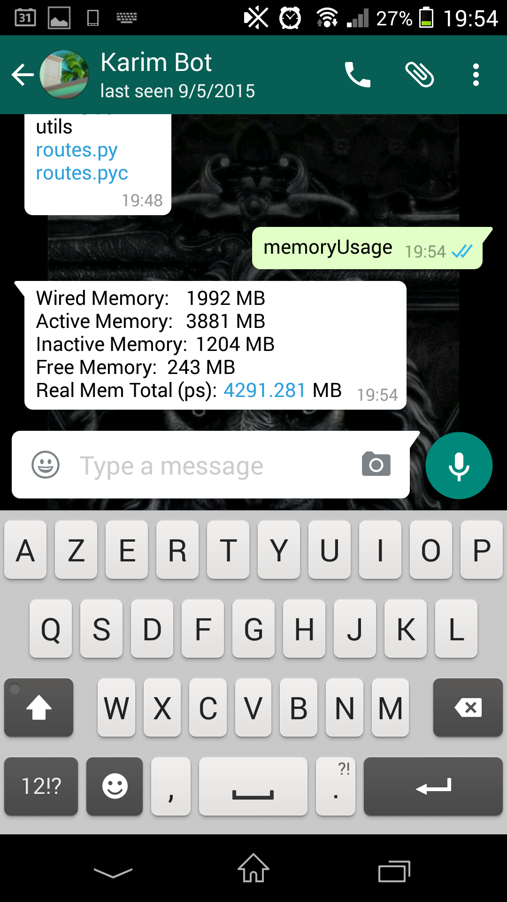
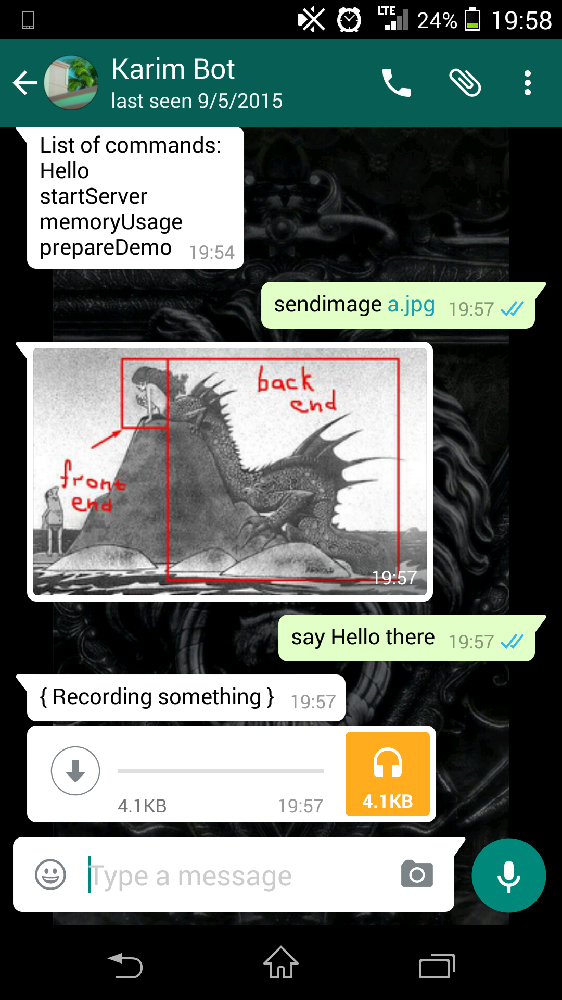

Control your server using Whatsapp
I still haven't found a decent command line app for Android/iPhone. I really need that because I can't always carry my computer around to manage my server. I tested some few apps, even IFTTT to automate some stuff, but you can't achieve anything groundbreaking with that.
Lately, I've been working on a project to automate lots of stuff on a continent wide scale... My programs sometimes fail, sometimes they work well but I need to supervise them. They are not even 6 months old.
So in order to stay in touch with my beloved servers, I coded this bot to control any machine remotely, using whatsapp - cron jobs didn't do the job anymore.
Why Whatsapp? Because I always have my phone with me.
I present to you, my Whatsapp command line remote control utility. Or whatsappcli. It works like a Slack bot, but it allows you way more than a simple slack bot.
You can use it to execute some predefined python functions or to execute commands on a shell, as if you were in front of your computer:
Here it is executing a simple ls: 
Or here it is to get the memory usage of my mac: 
It can also send simple images (think of a screenshot or anything image related) and tell jokes (Google TTS powered): 
For those Defcon people, it can be used as a dead man's switch, as in "delete all porn".
You can find the code here https://github.com/KarimJedda/whatsappcli, it's barebones and you can adapt it to your specific needs. (It's adapted on another programmers code) In order to do that, you should only edit the routes.py file.
There is 0 security at the moment, because I would don't know where to begin or what to look for.
Telegram can also be used, but I don't need that app. yet.
Have fun with it.